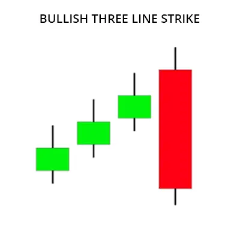
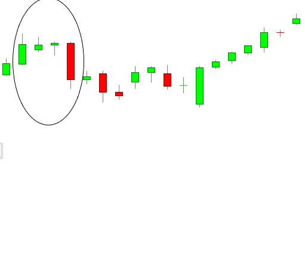
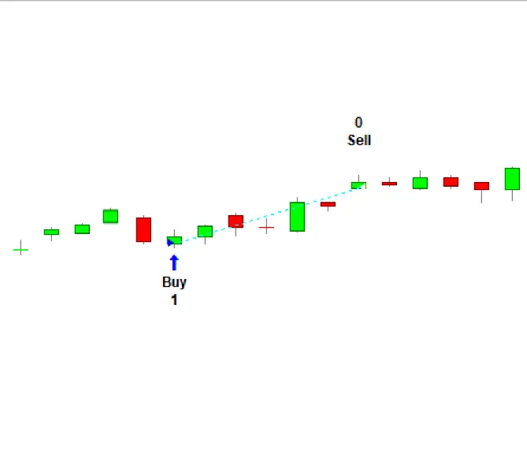

एक बुलिश थ्री-लाइन स्ट्राइक पैटर्न में कुछ महत्वपूर्ण तत्व होते हैं जो शामिल होते हैं: तीन लगातार अवधियां जहां क्लोज पिछले दिन से ऊंचा होता है। तीन लगातार अवधियां जहाँ निम्नतम पिछले दिन की तुलना में ऊंचा होता है। चार लगातार अवधियां जहां उच्च पिछले दिन की तुलना में ऊंचा होता है।
| Bullish Three-Line Strike |
एक बल्लिश थ्री-लाइन स्ट्राइक चार मोमबत्तियों से बनता है। इनमें से, पहले तीन मोमबत्तियां बल्लिश होती हैं, जबकि आखिरी मोमबत्ती बियरिश होती है। यह तीन मजबूत बल्लिश मोमबत्तियों से बनता है जो प्रगतिशील रूप से ऊपर समाप्त होती हैं और उसके बाद एक अंतिम स्ट्राइक मोमबत्ती होती है। स्ट्राइक कैंडलस्टिक बियरिश होती है और तीसरी मोमबत्ती से कम से कम ओपन के साथ शुरू होती है लेकिन पहली मोमबत्ती के ओपन से कम से कम बंद होती है। इसमें ये विशेषताएं होती हैं:

| Bullish Three Line Strike Example |

| Bullish Three Line Strike Trading Strategies |
अब जब आपने दो शक्तिशाली तकनीकों का एक त्वरित परिचय प्राप्त कर लिया है जिससे अधिकतम पैटर्न कार्यक्षमता बढ़ाई जा सकती है, तो अब समय है कुछ उदाहरण ट्रेडिंग स्ट्रेटेजीज पर आगे बढ़ने का जो बुलिश थ्री लाइन स्ट्राइक पर निर्भर करते हैं।
और जबकि नीचे दी गई स्ट्रेटेजियाँ वर्तमान में ट्रेड के लिए तैयार नहीं हो सकती हैं, लेकिन वे आपको उन उदाहरणों के बारे में बताती हैं जो आप खुद की ट्रेडिंग स्ट्रेटेजी बनाने के लिए जानने चाहिए।
व्यापक रूप से, संकेतक द्वारा बनाए गए मोमबत्तियों की रेंज का आकार इसकी विश्वसनीयता के अच्छे संकेतक हो सकते हैं। अर्थात, यदि किसी मोमबत्ती की रेंज बड़ी होती है, तो वह अधिक महत्वपूर्ण होती है।
इस प्रकार, हम बुलिश थ्री लाइन स्ट्राइक को रेंज कंडीशन के साथ मिलाएंगे। हम यह मांगेंगे कि पैटर्न के अंतिम बैशिक मोमबत्ती से पहले जो तीन बुलिश मोमबत्तियां हैं, उनकी रेंज धीरे-धीरे बढ़ती हो। इससे यह सुनिश्चित होता है कि बैशिक मोमबत्ती आने से पहले बुल्स मजबूत थे।
इसलिए, नियम निम्नलिखित होंगे:
